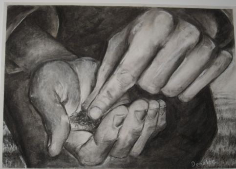
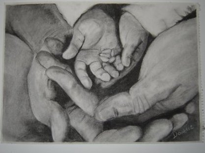
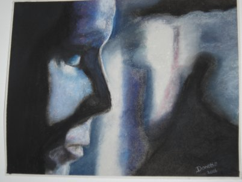

(Last updated 2007-04-29)

Completed July 2005
This is my first charcoal drawing that was completed in 2005. This picture was inspired by Matthew 17 v 20 "if you have faith as small as a mustard seed, you can say to this mountain, 'Move from here to there' and it will move. Nothing will be impossible for you" (NIV). I didn't draw a mountain but the theme is Faith. My thanks go to Sean Moore for modeling his hands for me to draw

Completed Dec 2005
My second picture, Child of faith, represents having the faith of a child and trusting in the Father

Completed Jan 2006
This was my first pastel picture. There was no actual meaning behind this picture, except that I liked it. Decide for yourself what you think.
I was taught and helped along my very talented friend Ilse Moore. Visit her website.
I have not done anything else since. Elijah hasn't given me time.